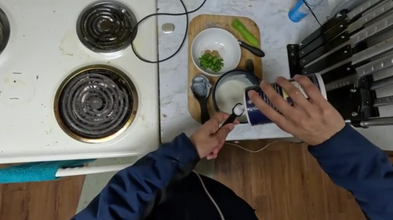
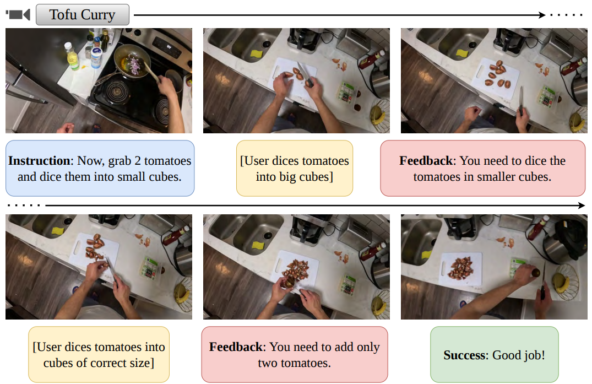
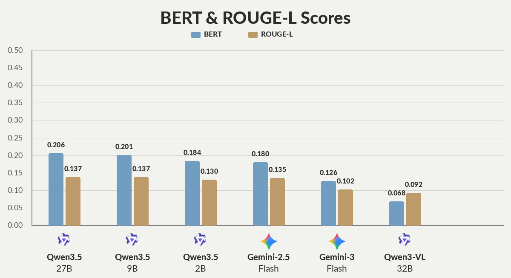
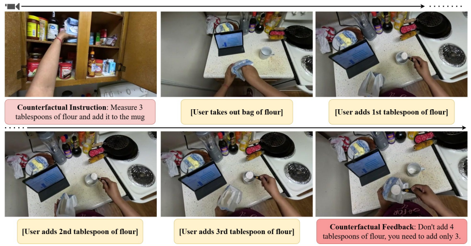
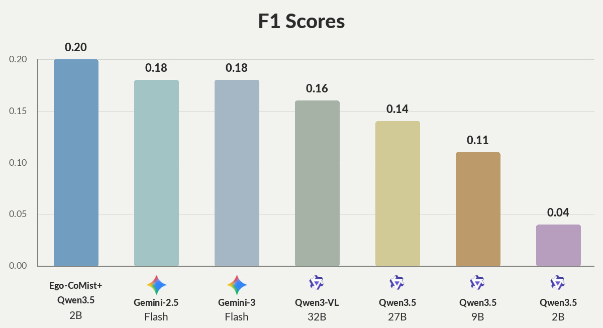
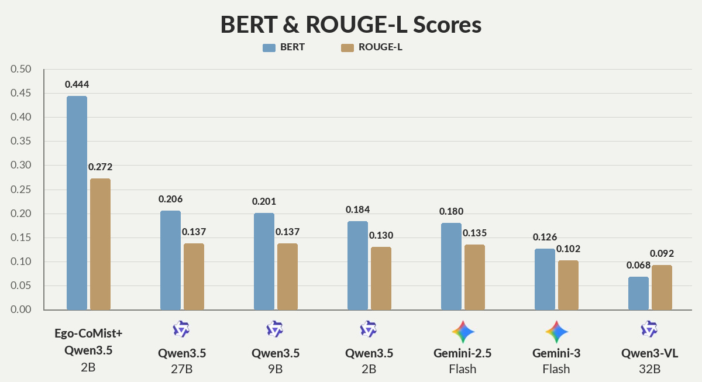

Research Blog
Ego-MC-Bench and the Qualcomm Interactive Cooking Dataset Suite
Post-hoc feedback isn't enough. Real-world cooking guidance needs interventions that catch mistakes before they happen.
What will you do when you want to learn a new task, like making a bowl of noodles?
- Learn from an online recipe or a video.
- Use an AI assistant that can provide step-by-step guidance.
The second option is increasingly appealing, but for it to work well in the real world, the AI assistant needs to:
- Provide step-by-step instructions.
- Intervene to prevent mistakes, as many cooking mistakes are irrecoverable.
(Read my other blog post to learn more abou task assistance.)
Intervention: Critical for Cooking Guidance
If a mistake is caught too late in the cooking domain, the user must often restart the recipe from scratch — for example, after adding too much salt to a curry. In domains such as furniture assembly, a missed early intervention is usually less costly, since the step can often be undone afterwards. In cooking, it is critical to intervene in time.

Here the person is about to add way too much salt. The right time to intervene is before the person adds the salt to the bowl (see above), otherwise the mixture would no longer be useful for the next step of the recipe.
Benchmarks: Ego-MC-Bench and Qualcomm Interactive Cooking Dataset
To develop real-world AI assistants for cooking guidance, we need reliable benchmarks. Prior work, such as the Qualcomm Interactive Cooking Dataset [NeurIPS 2025], includes post-hoc feedback, which points out mistakes only after they have already occurred. Instead, we need a benchmark where feedback is interventional — designed to prevent mistakes. Furthermore, the benchmark needs to be collected in a real-world interactive environment, where an expert instructor provides step-by-step instructions and feedback. Thus, we collected Ego-MC-Bench: the first benchmark for assessing intervention and guidance capabilities for real-world task guidance.

Above, we show an example from Ego-MC-Bench[3], where the instruction is “Now, grab 2 tomatoes and dice them into small cubes.” The user, however, dices the tomatoes into big cubes. The instructor intervenes, providing feedback that they need to dice the tomatoes into smaller cubes. The user then dices the tomatoes into cubes of the correct size. Next, the user tries to cut more than two tomatoes. The instructor intervenes again, reminding them to cut only two tomatoes — successfully completing the recipe step. We provide benchmark stats in the paper[1].


Evaluation on current state-of-the-art video LLMs shows very poor mistake-intervention capabilities. Even Gemini-3-Flash reaches a mistake-intervention F1 score of only 0.18 on per-recipe steps, highlighting the challenge of detecting mistakes at the right time while producing useful corrective feedback. Moreover, the feedbacks provided by these state-of-the-art models are not accurate as highlighted by the BERT and ROUGE-L scores. The weak performance is because the task is hard: it combines the challenges of perception, memory, temporal grounding, anticipation, and proactive communication.
Ego-CoMist: Training Data
To develop real-world AI assistants for cooking guidance, we also need training data. Due to the lack of interventional training data, we generate a synthetic dataset — Ego-CoMist[4]. Built from existing non-interactive datasets, it approximates the Ego-MC-Bench setting by providing feedback at the earliest point a mistake becomes apparent.

Above, we show an example from Ego-CoMist, where the counterfactual instruction is to measure three tablespoons of flour into the mug. As the user adds a fourth tablespoon, Ego-CoMist steps in with counterfactual feedback at exactly that point — before the mistake is made.


Finetuning on Ego-CoMist+ significantly improves mistake-intervention capabilities. Qwen3.5-2B reaches an F1 score of 0.20 on per-recipe steps, showing strong gains for small models that are practical for low-latency, edge-deployed assistants.
Important note: Ego-CoMist+ also contains the training set from the Qualcomm Interactive Cooking Dataset. Although not specifically designed for interventions, the Qualcomm Interactive Cooking Dataset training data still helps improve performance.
Conclusion
Effective cooking assistance requires more than step-by-step instructions. It requires timely interventions that prevent mistakes before they become irrecoverable. Ego-MC-Bench highlights how challenging this remains for current video LLMs, with even Gemini-3-Flash often failing to intervene at the right moment with appropriate feedback. Ego-CoMist provides a practical path forward by converting existing cooking videos into counterfactual training data, yielding meaningful improvements, particularly for small, edge-deployable models such as Qwen3.5-2B. Together, Ego-MC-Bench and the Qualcomm Interactive Cooking Dataset establish a strong foundation for research on real-world AI assistants. While reliable end-to-end recipe guidance remains an open challenge, improving intervention capabilities, knowing when and how to step in, is a critical next step toward that goal.
References
- Bhattacharyya, A., Mahajan, S., Haresh, S., Yasarla, R., Pourreza, R., Liu, L., Garrepalli, R., and Memisevic, R. Streaming Interventions: Can Video Large Language Models Correct Mistakes as They Occur? arXiv preprint arXiv:2606.09547, 2026. Link
- Qualcomm AI Research. Qualcomm Interactive Cooking Evaluation Code. GitHub repository. Link
- Qualcomm AI Research. Ego-MC-Bench: Qualcomm Interactive Cooking Dataset (Ego Mistake Corrections). Hugging Face dataset. Link
- Qualcomm AI Research. Ego-CoMist: Qualcomm Interactive Cooking Dataset (Counterfactual Mistakes). Hugging Face dataset. Link